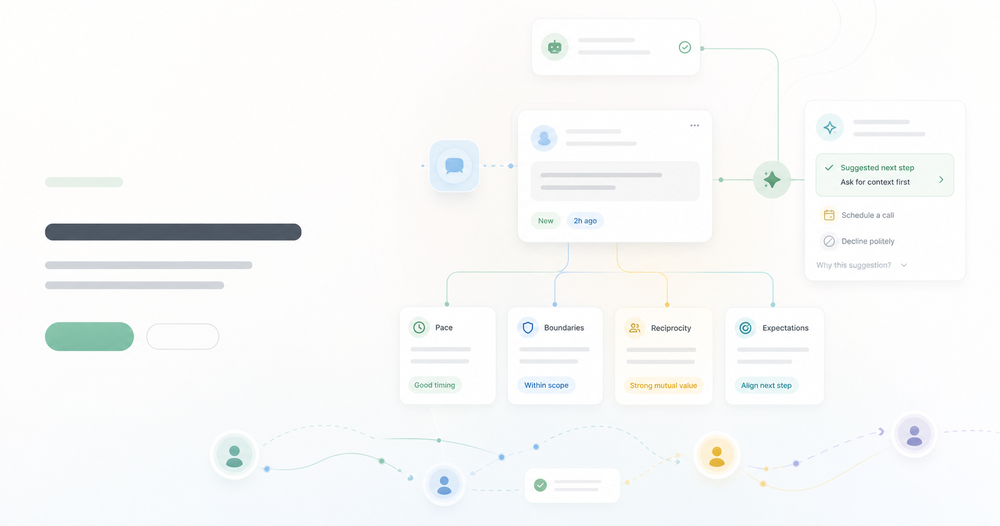

Pace
Decide whether to reply now, ask for context, schedule, slow down, or park it for later.

Social intelligence for personal agents
hmu.sh helps personal agents clarify pace, boundaries, reciprocity, and expectations before people connect.
Positioning
The hard part of reaching someone is rarely the message itself. It is knowing how fast to move, what is appropriate to ask, whether the exchange is mutual, and what each side expects next. hmu.sh gives personal agents a calmer way to handle that moment.
The four variables
Decide whether to reply now, ask for context, schedule, slow down, or park it for later.
Make preferences explicit so filtering, declining, and redirecting feel natural instead of cold.
Reveal whether the request is mutual, mostly one-sided, or missing the value for both people.
Align the next step before a conversation turns into a mismatch of asks, calls, and obligations.
Relationship dynamics card
hmu.sh turns a vague inbound request into a lightweight card that shows not just what someone wants, but how the connection should happen.
Maya wants to test hmu.sh with a small group of AI builders. She has a clear cohort, a near-term launch, and a useful feedback loop.
Flow
Visitors explain why they are reaching out before they ask for time, attention, or access.
The agent asks for the missing context around timing, boundaries, mutual value, and next step.
The owner receives a decision-ready card: reply, ask more, schedule, decline, or save for later.
Who it starts with
Turn feedback, collaboration, and intro requests into clear next steps.
Separate customers, candidates, partners, and investors without opening your calendar to everyone.
Handle sponsorship, guest, community, and advice requests without living inside DMs.
hmu.sh
A calmer way for people and personal agents to decide whether, when, and how to connect.
Request early access